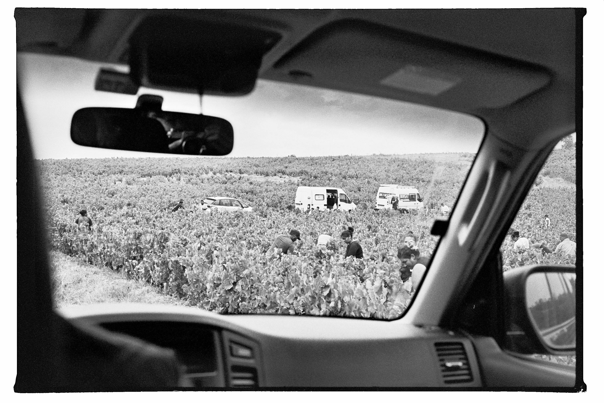

About Vers Le Vin
Het moet september geweest zijn, 2019 als ik mij niet vergis. Ik zat op de achterbank van mijn vaders Mitsubishi, mijn analoge fototoestel in de hand, starend naar het voorbijtrekkende landschap. We waren op weg naar de Provence, maar in plaats van de voorspelbare route over de snelweg te nemen, reden we hooguit zeventig kilometer per uur over kronkelende landwegen door de Beaujolais, waar je nauwelijks een tegenligger zag. De zon scheen zacht door de ramen en bracht me in een dromerige toestand terwijl we door slaperige dorpen reden. Het licht streek over de kleurrijke wijngaarden die zich rondom ons uitstrekten, vol grote trossen sappige, dieppaarse druiven. Hier en daar doken figuren op tussen de ranken, plukkers die bezig waren met de manuele oogst.
Hoewel ik altijd al graag wijn had gedronken, ontwaakte het zien van die oogst een diepere nieuwsgierigheid, naar het ambacht, de tradities, de geschiedenis, de landschappen en de mensen dat ik allemaal wou ontdekken. Niet lang later begon ik met een driejarige opleiding sommelier conseil en behaalde mijn diploma in de wijnuniversiteit Suze-la-Rousse. Tijdens deze studie trok ik naar enkele dichtbijzijnde wijngebieden om kleinschalige wijnmakers te ontdekken met unieke terroirwijnen. Zo ging ik bij één van die reizen terug naar de Beaujolais om de cru’s te ontdekken. Terug op dezelfde kronkelende wegen, deze keer in mijn citroën berlingo, dwaalde ik af van de cru dorpen en kwam ik uiteindelijk onverwachts in het dorp Lantignié uit, waar ik enkele wijnbezoeken inplande. De kwaliteit van hun wijnen, de eigenheidheid van de makers en de maatschappelijke relevantie van hun manier van wijnmaken sprak me enorm aan. Ik fantaseerde over een film die uiteindelijk mijn afstudeerfilm aan het KASK werd, ‘terroir’genaamd, waarin ik enkele wijnakers uit Lantignié een heel jaar volgde. Ik besliste ook om mijn thesis voor Suze-La-Rousse over de terroir van Lantignié te schrijven.

De vele bezoeken aan Lantignié zorgden ervoor dat ik steeds meer geïntegreerd raakte op die plek, waar ik steeds vaker met open armen ontvangen werd. Nu begin ik met het importeren van de wijnen van de wijnmakers in Lantignié die ik door en door ken en waar ik helemaal achter sta. Wat nog zal volgen is nog gissen, hangt er vanaf waar de wegen me nog gaan leiden.